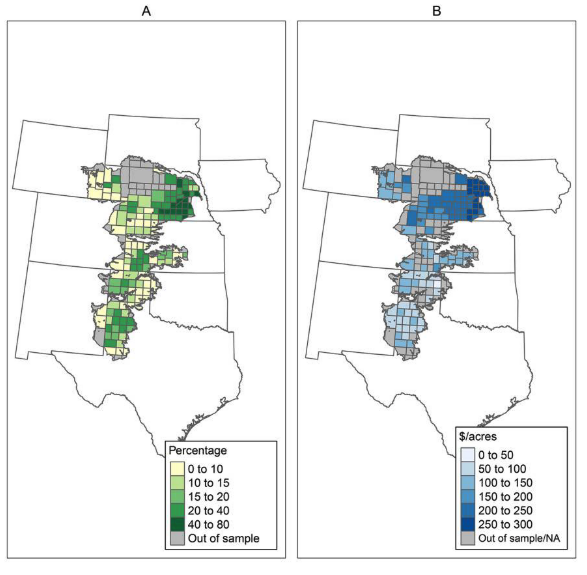

Code
# your R code goes here
# commentIn this paper….
Some more text… This is bold text
My name is Gaby…
Use # symbols for section titles. Leave a blank line after headings for readability.
## Section title
### Subsection title
#### Smaller heading (more # = smaller heading)
If you are using Source: text and italic
If you are using Visual: Click Format \(\rightarrow\) Bold
Find any image and save it as .png in your R project.
The figure below shows that…

You can learn more about this paper here.
How to include figures and links when using Visual?
R code chunks are marked with {r}. Type the chunk by hand or using keyboard shortcut.
Mac: Command + Option + I
Windows: Ctrl + Alt + I
# your R code goes here
# commentExample:
d1 <- 4 + 8
d1[1] 12[1] 12#install.packages("tidyverse")
library(tidyverse) # Load packagesWarning: package 'tibble' was built under R version 4.5.2Warning: package 'purrr' was built under R version 4.5.2Warning: package 'dplyr' was built under R version 4.5.2── Attaching core tidyverse packages ──────────────────────── tidyverse 2.0.0 ──
✔ dplyr 1.2.0 ✔ readr 2.1.5
✔ forcats 1.0.0 ✔ stringr 1.5.1
✔ ggplot2 3.5.2 ✔ tibble 3.3.1
✔ lubridate 1.9.4 ✔ tidyr 1.3.1
✔ purrr 1.2.1
── Conflicts ────────────────────────────────────────── tidyverse_conflicts() ──
✖ dplyr::filter() masks stats::filter()
✖ dplyr::lag() masks stats::lag()
ℹ Use the conflicted package (<http://conflicted.r-lib.org/>) to force all conflicts to become errorsEverything in R is an object, and R is an object-oriented language. An object exists once you assign a value to it.
After an object is created, it appears in the Environment pane. From there, you can use the object in your code (inspect it, manipulate it, change it, or redefine it by assigning it a new value).
# Defining an object (<-)
d1 <- 2 + 4
d1[1] 6#data() # list of datasets
data(mtcars) # load mtcars
# create an object
my.data <- mtcars
# Inspect it
head(my.data) mpg cyl disp hp drat wt qsec vs am gear carb
Mazda RX4 21.0 6 160 110 3.90 2.620 16.46 0 1 4 4
Mazda RX4 Wag 21.0 6 160 110 3.90 2.875 17.02 0 1 4 4
Datsun 710 22.8 4 108 93 3.85 2.320 18.61 1 1 4 1
Hornet 4 Drive 21.4 6 258 110 3.08 3.215 19.44 1 0 3 1
Hornet Sportabout 18.7 8 360 175 3.15 3.440 17.02 0 0 3 2
Valiant 18.1 6 225 105 2.76 3.460 20.22 1 0 3 1